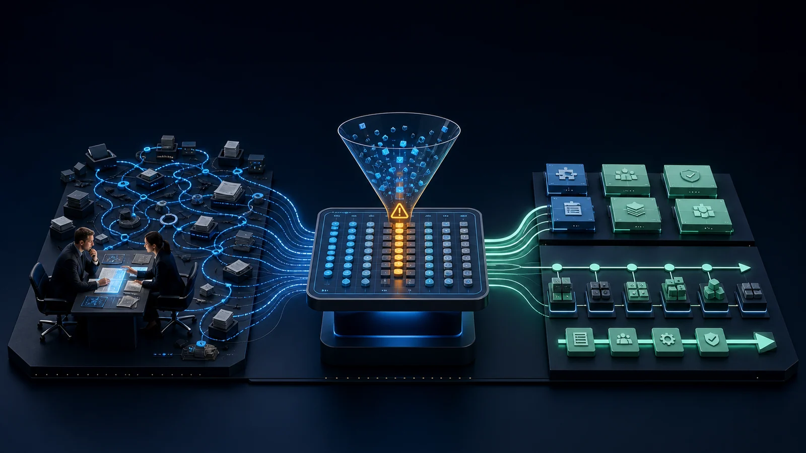
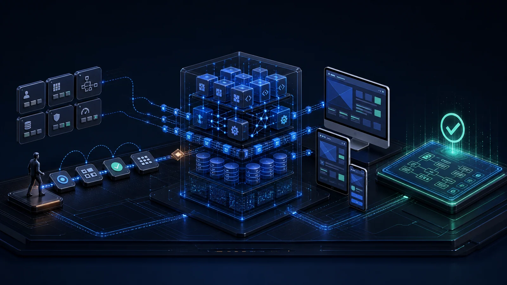
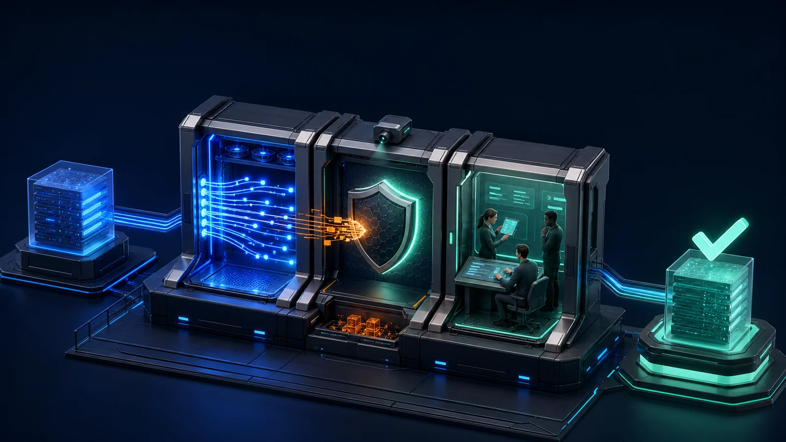

01
요구 정의 · 업무 분석
현업의 업무 흐름과 병목을 먼저 확인해 기능·
- AS-IS 분석 현업 인터뷰로 업무 흐름·
병목· 예외 케이스 문서화 - 측정 가능한 요구 기능 요구와 비기능 요구(성능·
보안· 가용성)를 기준으로 정의 - 일정·
리스크 WBS와 마일스톤으로 투명하게 관리
사용자 서비스와 내부 업무, 데이터를 하나로 설계하고 오픈 이후 운영까지 이어갑니다.
사용자 서비스, 관리자 업무, 데이터와 외부 시스템을 하나의 구조로 설계합니다. 요구 분석부터 개발·보안 검증·이행·운영 서비스 수준 관리까지 같은 팀이 책임지고 이어갑니다.


흩어진 업무와 데이터를 하나로 묶습니다.
요구 정리부터 오픈과 운영까지 여섯 단계로 진행합니다.

현업의 업무 흐름과 병목을 먼저 확인해 기능·

예상 트래픽과 데이터 규모에 맞는 확장 구조를 정하고, 실제 사용할 화면 흐름을 개발 전에 검증합니다.
데이터 구조와 API, 이행·

코드 리뷰·

성능·

이행 리허설과 롤백 계획으로 오픈 위험을 낮추고, 모니터링·
프로젝트에 따라 AX·
모바일 금융·
영상·
영상 인식 교통·
설비 이상 조기감지·
업무를 어떤 시스템으로 구현하고 어디까지 운영했는지 대표 프로젝트로 확인할 수 있습니다.